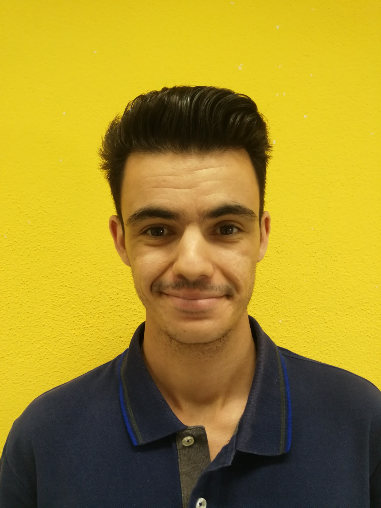
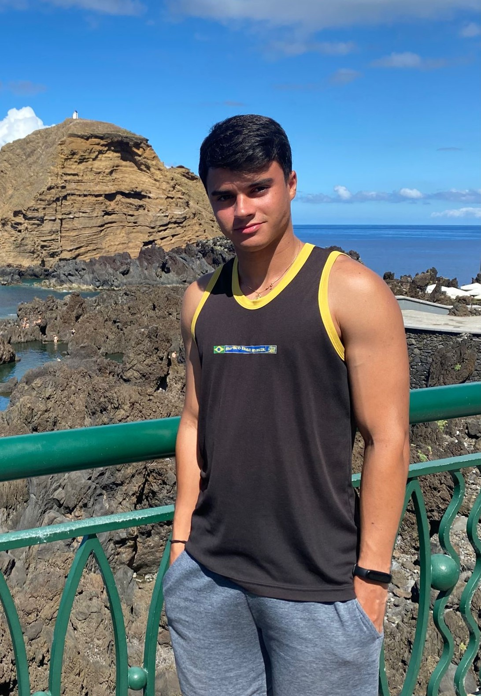
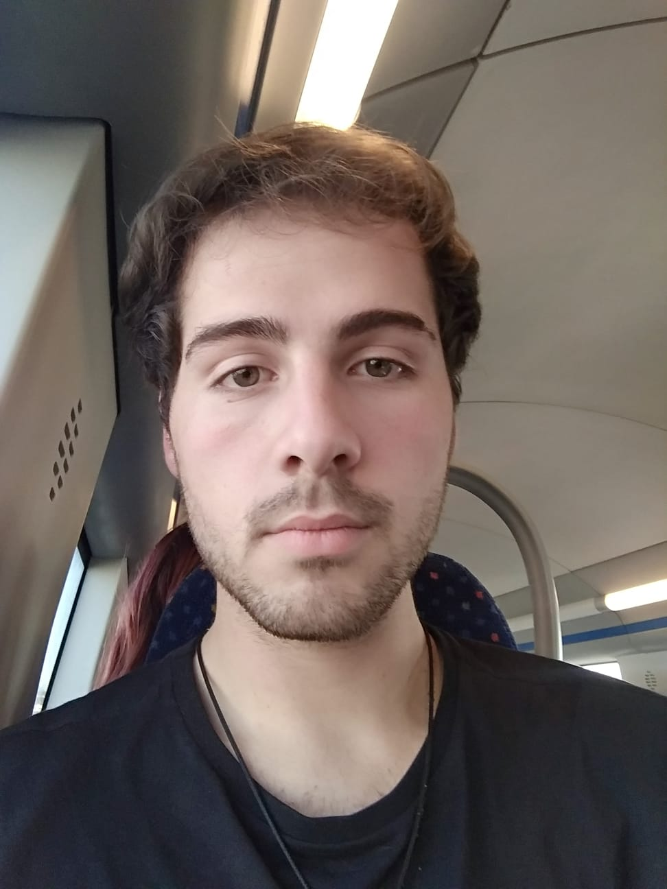

HOME
QUEM SOMOS
Integrantes do Grupo
 Olá, o meu nome é Rui Ribeiro tenho 22 anos atualmente estou a estudar no curso profissional de Técnico de Informática e Sistemas na Escola Profissional de Almada, sou uma pessoa dedicada aos meus objetivos, sempre cordial. Já desde muito novo que tenho uma curiosidade enorme sobre a tecnologia e inovação da mesma, daí ter decidido realizar este curso. Fora da escola dedico me aos meus objetivos, claro também gosto de jogar no tempos livres.
Olá, meu nome é André Silva e tenho 18 anos, estou a realizar um curso Tecnico de informatica e Sistemas na Escola Profissional de Almada, meu objetivo é ser um programador bem sucedido de jogos e meu sonho é trabalhar na empresa SEGA. Sou amigável, muito protetor, pouco teimoso e um pouco preguiçoso mas faço sempre o possível para fazer as coisas no meu máximo desempenho.
 Olá, meu nome é Lucas Martins e tenho 20 anos. Sou uma pessoa dedicada, confiável e entusiasta, que gosta de aprender coisas novas e se desafiar constantemente. Atualmente, estou a frequentar o curso de Técnico de Informática e Sistemas na Escola Profissional de Almada, onde tenho a oportunidade de desenvolver minhas habilidades e conhecimentos. Fora dos estudos, gosto de video jogos, que me permitem relaxar e descontrair. Também gosto de viajar, o que me ajuda a manter a minha mente e corpo em equilíbrio. Além disso, adoro passar tempo com a minha família e amigos, pois valorizo muito as relações pessoais.
 Olá, meu nome é Ricardo Matos e tenho 19 anos. Atualmente, estou a realizar o curso de Técnico de Informática e Sistemas na Escola Profissional de Almada e estou animado para compartilhar um pouco sobre mim com vocês. Desde jovem, sempre fui fascinado pela tecnologia e seu impacto no mundo ao nosso redor. Com o tempo, desenvolvi um interesse específico em programação e sistemas de informação. É por isso que decidi me matricular em um curso de informática, onde tenho aprendido habilidades importantes e aprimorado minha compreensão da tecnologia. Além disso, gosto de trabalhar em equipe e sou muito colaborativo. Acredito que é importante compartilhar ideias e conhecimentos para alcançar objetivos em comum. Com isso em mente, sempre tento colaborar com meus colegas de classe e apoiá-los no que precisam.